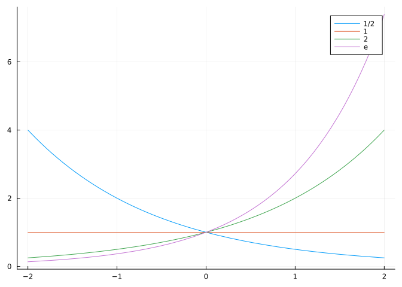
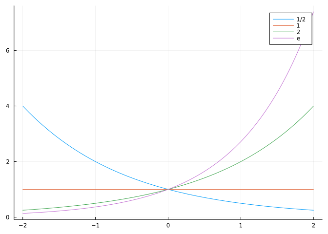
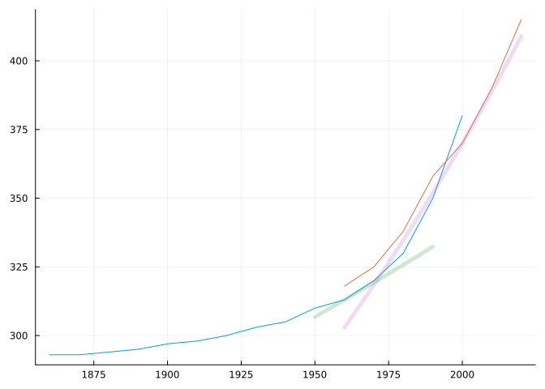
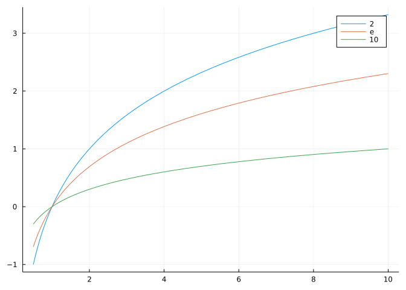
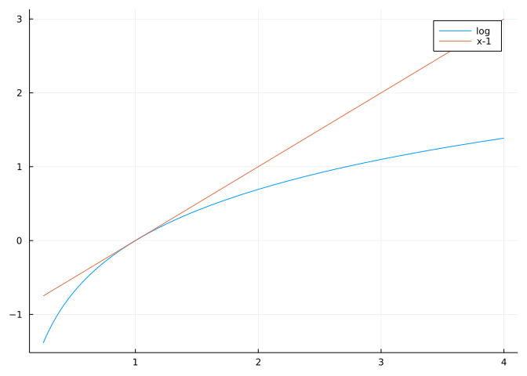
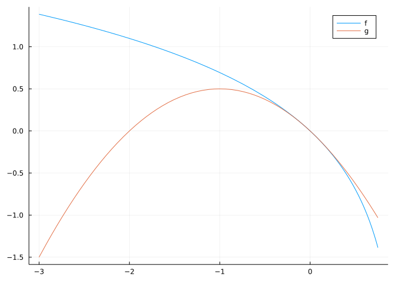

plot(x -> (1/2)^x, -2, 2, label="1/2")
plot!(x -> 1^x, label="1")
plot!(x -> 2^x, label="2")
plot!(x -> exp(x), label="e")
This section uses the following add-on packages:
using CalculusWithJulia
using PlotsThe family of exponential functions is used to model growth and decay. The family of logarithmic functions is defined here as the inverse of the exponential functions, but have reach far outside of that.
The family of exponential functions is defined by \(f(x) = a^x, -\infty< x < \infty\) and \(a > 0\). For \(0 < a < 1\) these functions decay or decrease, for \(a > 1\) the functions grow or increase, and if \(a=1\) the function is constantly \(1\).
For a given \(a\), defining \(a^n\) for positive integers is straightforward, as it means multiplying \(n\) copies of \(a.\) From this, for integer powers, the key properties of exponents: \(a^x \cdot a^y = a^{x+y}\), and \((a^x)^y = a^{x \cdot y}\) are immediate consequences. For example with \(x=3\) and \(y=2\):
\[\begin{align*} a^3 \cdot a^2 &= (a\cdot a \cdot a) \cdot (a \cdot a) \\ &= (a \cdot a \cdot a \cdot a \cdot a) \\ &= a^5 = a^{3+2},\\ (a^3)^2 &= (a\cdot a \cdot a) \cdot (a\cdot a \cdot a)\\ &= (a\cdot a \cdot a \cdot a\cdot a \cdot a) \\ &= a^6 = a^{3\cdot 2}. \end{align*}\]
For \(a \neq 0\), \(a^0\) is defined to be \(1\).
For positive, integer values of \(n\), we have by definition that \(a^{-n} = 1/a^n\).
For \(n\) a positive integer, we can define \(a^{1/n}\) to be the unique positive solution to \(x^n=a\).
Using the key properties of exponents we can extend this to a definition of \(a^x\) for any rational \(x\).
Defining \(a^x\) for any real number requires some more sophisticated mathematics.
One method is to use a theorem that says a bounded monotonically increasing sequence will converge. (This uses the Completeness Axiom.) Then for \(a > 1\) we have if \(q_n\) is a sequence of rational numbers increasing to \(x\), then \(a^{q_n}\) will be a bounded sequence of increasing numbers, so will converge to a number defined to be \(a^x\). Something similar is possible for the \(0 < a < 1\) case.
This definition can be done to ensure the rules of exponents hold for \(a > 0\):
\[ a^{x + y} = a^x \cdot a^y, \quad (a^x)^y = a^{x \cdot y}. \]
In Julia these functions are implemented using ^. A special value of the base, \(e\), may be defined as well in terms of a limit. The exponential function \(e^x\) is implemented in exp.
plot(x -> (1/2)^x, -2, 2, label="1/2")
plot!(x -> 1^x, label="1")
plot!(x -> 2^x, label="2")
plot!(x -> exp(x), label="e")
We see examples of some general properties:
Continuously compounded interest allows an initial amount \(P_0\) to grow over time according to \(P(t)=P_0e^{rt}\). Investigate the difference between investing \(1,000\) dollars in an account which earns \(2\)% as opposed to an account which earns \(8\)% over \(20\) years.
The \(r\) in the formula is the interest rate, so \(r=0.02\) or \(r=0.08\). To compare the differences we have:
r2, r8 = 0.02, 0.08
P0 = 1000
t = 20
P0 * exp(r2*t), P0 * exp(r8*t)(1491.8246976412704, 4953.0324243951145)As can be seen, there is quite a bit of difference.
In \(1494\), Pacioli gave the “Rule of \(72\)”, stating that to find the number of years it takes an investment to double when continuously compounded one should divide the interest rate into \(72\).
This formula is not quite precise, but a rule of thumb, the number is closer to \(69\), but \(72\) has many divisors which makes this an easy to compute approximation. Let’s see how accurate it is:
t2, t8 = 72/2, 72/8
exp(r2*t2), exp(r8*t8)(2.0544332106438876, 2.0544332106438876)So fairly close - after \(72/r\) years the amount is \(2.05...\) times more than the initial amount.
Bacterial growth (according to Wikipedia) is the asexual reproduction, or cell division, of a bacterium into two daughter cells, in a process called binary fission. During the log phase “the number of new bacteria appearing per unit time is proportional to the present population.” The article states that “Under controlled conditions, cyanobacteria can double their population four times a day…”
Suppose an initial population of \(P_0\) bacteria, a formula for the number after \(n\) hours is \(P(n) = P_0 2^{n/6}\) where \(6 = 24/4\).
After two days what multiple of the initial amount is present if conditions are appropriate?
n = 2 * 24
2^(n/6)256.0That would be an enormous growth. Don’t worry: “Exponential growth cannot continue indefinitely, however, because the medium is soon depleted of nutrients and enriched with wastes.”
The value of 2^n and 2.0^n is different in Julia. The former remains an integer and is subject to integer overflow for n > 62. As used above, 2^(n/6) will not overflow for larger n, as when the exponent is a floating point value, the base is promoted to a floating point value.
The famous Fibonacci numbers are \(1,1,2,3,5,8,13,\dots\), where \(F_{n+1}=F_n+F_{n-1}\). These numbers increase. To see how fast, if we guess that the growth is eventually exponential and assume \(F_n \approx c \cdot a^n\), then our equation is approximately \(ca^{n+1} = ca^n + ca^{n-1}\). Factoring out common terms gives \(ca^{n-1} \cdot (a^2 - a - 1) = 0\). The term \(a^{n-1}\) is always positive, so any solution would satisfy \(a^2 - a -1 = 0\). The positve solution is \((1 + \sqrt{5})/2 \approx 1.618\)
That is evidence that the \(F_n \approx c\cdot 1.618^n\). (See Relation to golden ratio for a related, but more explicit exact formula.
In the previous example, the exponential family of functions is used to describe growth. Polynomial functions also increase. Could these be used instead? If so that would be great, as they are easier to reason about.
The key fact is that exponential growth is much greater than polynomial growth. That is for large enough \(x\) and for any fixed \(a>1\) and positive integer \(n\) it is true that \(a^x \gg x^n\).
Later we will see an easy way to certify this statement.
Euler’s number, \(e\), may be defined several ways. One way is to define \(e^x\) by the limit \((1+x/n)^n\). Then \(e=e^1\). The value is an irrational number. This number turns up to be the natural base to use for many problems arising in Calculus. In Julia there are a few mathematical constants that get special treatment, so that when needed, extra precision is available. The value e is not immediately assigned to this value, rather ℯ is. This is typed \euler[tab]. The label e is thought too important for other uses to reserve the name for representing a single number. However, users can issue the command using Base.MathConstants and e will be available to represent this number. When the CalculusWithJulia package is loaded, the value e is defined to be the floating point number returned by exp(1). This loses the feature of arbitrary precision, but has other advantages.
A cute appearance of \(e\) is in this problem: Let \(a>0\). Cut \(a\) into \(n\) equal pieces and then multiply them. What \(n\) will produce the largest value? Note that the formula is \((a/n)^n\) for a given \(a\) and \(n\).
Suppose \(a=5\) then for \(n=1,2,3\) we get:
a = 5
(a/1)^1, (a/2)^2, (a/3)^3(5.0, 6.25, 4.629629629629631)We’d need to compare more, but at this point \(n=2\) is the winner when \(a=5\).
With calculus, we will be able to see that the function \(f(x) = (a/x)^x\) will be maximized at \(a/e\), but for now we approach this in an exploratory manner. Suppose \(a=5\), then we have:
a = 5
n = 1:10
f(n) = (a/n)^n
@. [n f(n) (a/n - e)] # @. just allows broadcasting10×3 Matrix{Float64}:
1.0 5.0 2.28172
2.0 6.25 -0.218282
3.0 4.62963 -1.05162
4.0 2.44141 -1.46828
5.0 1.0 -1.71828
6.0 0.334898 -1.88495
7.0 0.0948645 -2.004
8.0 0.0232831 -2.09328
9.0 0.00504136 -2.16273
10.0 0.000976562 -2.21828We can see more clearly that \(n=2\) is the largest value for \(f\) and \(a/2\) is the closest value to \(e\). This would be the case for any \(a>0\), pick \(n\) so that \(a/n\) is closest to \(e\).
The \(1972\) book The limits to growth by Meadows et. al. discusses the implications of exponential growth. It begins stating their conclusion (emphasis added): “If the present growth trends in world population, industrialization, pollution, food production, and resource depletion continue unchanged, the limits to growth on this planet will be reached sometime in the next one hundred years.” They note it is possible to alter these growth trends. We are now half way into this time period.
Let’s consider one of their examples, the concentration of carbon dioxide in the atmosphere. In their Figure \(15\) they show data from \(1860\) onward of CO\(_2\) concentration extrapolated out to the year \(2000\). At climate.gov we can see actual measurements from \(1960\) to \(2020\). Numbers from each graph are read from the graphs, and plotted in the code below:
co2_1970 = [(1860, 293), (1870, 293), (1880, 294), (1890, 295), (1900, 297),
(1910, 298), (1920, 300), (1930, 303), (1940, 305), (1950, 310),
(1960, 313), (1970, 320), (1980, 330), (1990, 350), (2000, 380)]
co2_2021 = [(1960, 318), (1970, 325), (1980, 338), (1990, 358), (2000, 370),
(2010, 390), (2020, 415)]
xs,ys = unzip(co2_1970)
plot(xs, ys, legend=false)
𝒙s, 𝒚s = unzip(co2_2021)
plot!(𝒙s, 𝒚s)
r = 0.002
x₀, P₀ = 1960, 313
plot!(x -> P₀ * exp(r * (x - x₀)), 1950, 1990, linewidth=5, alpha=0.25)
𝒓 = 0.005
𝒙₀, 𝑷₀ = 2000, 370
plot!(x -> 𝑷₀ * exp(𝒓 * (x - 𝒙₀)), 1960, 2020, linewidth=5, alpha=0.25)
(The unzip function is from the CalculusWithJulia package and will be explained in a subsequent section.) We can see that the projections from the year \(1970\) hold up fairly well
On this plot we added two exponential models. at \(1960\) we added a roughly \(0.2\) percent per year growth (a rate mentioned in an accompanying caption) and at \(2000\) a roughly \(0.5\) percent per year growth. The former barely keeping up with the data.
The word roughly above could be made exact. Suppose we knew that between \(1960\) and \(1970\) the rate went from \(313\) to \(320\). If this followed an exponential model, then \(r\) above would satisfy:
\[ P_{1970} = P_{1960} e^{r * (1970 - 1960)} \]
or on division \(320/313 = e^{r\cdot 10}\). Solving for \(r\) can be done – as explained next – and yields \(0.002211\dots\).
As the exponential functions are strictly decreasing when \(0 < a < 1\) and strictly increasing when \(a>1,\) in both cases an inverse function will exist. (When \(a=1\) the function is a constant and is not one-to-one.) The domain of an exponential function is all real \(x\) and the range is all positive \(x\), so these are switched around for the inverse function. Explicitly: the inverse function to \(f(x)=a^x\) will have domain \((0,\infty)\) and range \((-\infty, \infty)\) when \(a > 0, a \neq 1\).
The inverse function will solve for \(x\) in the equation \(a^x = y\). The answer, formally, is the logarithm base \(a\), written \(\log_a(x)\).
That is \(a^{\log_a(x)} = x\) for \(x > 0\) and \(\log_a(a^x) = x\) for all \(x\).
To see how a logarithm is mathematically defined will have to wait, though the family of functions - one for each \(a>0\) - are implemented in Julia through the function log(a,x). There are special cases requiring just one argument: log(x) will compute the natural log, base \(e\) - the inverse of \(f(x) = e^x\); log2(x) will compute the log base \(2\) - the inverse of \(f(x) = 2^x\); and log10(x) will compute the log base \(10\) - the inverse of \(f(x)=10^x\). (Also log1p computes an accurate value of \(\log(1 + p)\) when \(p \approx 0\).)
To see this in an example, we plot for base \(2\) the exponential function \(f(x)=2^x\), its inverse, and the logarithm function with base \(2\):
f(x) = 2^x
xs = range(-2, stop=2, length=100)
ys = f.(xs)
plot(xs, ys, color=:blue, label="2ˣ") # plot f
plot!(ys, xs, color=:red, label="f⁻¹") # plot f^(-1)
xs = range(1/4, stop=4, length=100)
plot!(xs, log2.(xs), color=:green, label="log₂") # plot log2
Though we made three graphs, only two are seen, as the graph of log2 matches that of the inverse function.
Note that we needed a bit of care to plot the inverse function directly, as the domain of \(f\) is not the domain of \(f^{-1}\). Again, in this case the domain of \(f\) is all \(x\), but the domain of \(f^{-1}\) is only all positive \(x\) values.
Knowing that log2 implements an inverse function allows us to solve many problems involving doubling.
An old story about doubling is couched in terms of doubling grains of wheat. To simplify the story, suppose each day an amount of grain is doubled. How many days of doubling will it take \(1\) grain to become \(1\) million grains?
The number of grains after one day is \(2\), two days is \(4\), three days is \(8\) and so after \(n\) days the number of grains is \(2^n\). To answer the question, we need to solve \(2^x = 1,000,000\). The logarithm function yields \(20\) days (after rounding up):
log2(1_000_000)19.931568569324174The half-life of a radioactive material is the time it takes for half the material to decay. Different materials have quite different half lives with some quite long, and others quite short. See half lives for some details.
The carbon \(14\) isotope is a naturally occurring isotope on Earth, appearing in trace amounts. Unlike Carbon \(12\) and \(13\) it decays, in this case with a half life of \(5730\) years (plus or minus \(40\) years). In a technique due to Libby, measuring the amount of Carbon 14 present in an organic item can indicate the time since death. The amount of Carbon \(14\) at death is essentially that of the atmosphere, and this amount decays over time. So, for example, if roughly half the carbon \(14\) remains, then the death occurred about \(5730\) years ago.
A formula for the amount of carbon \(14\) remaining \(t\) years after death would be \(P(t) = P_0 \cdot 2^{-t/5730}\).
If \(1/10\) of the original carbon \(14\) remains, how old is the item? This amounts to solving \(2^{-t/5730} = 1/10\). We have: \(-t/5730 = \log_2(1/10)\) or:
-5730 * log2(1/10)19034.647983704584(Historically) Libby and James Arnold proceeded to test the radiocarbon dating theory by analyzing samples with known ages. For example, two samples taken from the tombs of two Egyptian kings, Zoser and Sneferu, independently dated to \(2625\) BC plus or minus \(75\) years, were dated by radiocarbon measurement to an average of \(2800\) BC plus or minus \(250\) years. These results were published in Science in \(1949\). Within \(11\) years of their announcement, more than \(20\) radiocarbon dating laboratories had been set up worldwide. Source: Wikipedia.
The basic graphs of logarithms (\(a > 1\)) are all similar, though as we see larger bases lead to slower growing functions, though all satisfy \(\log_a(1) = 0\):
plot(log2, 1/2, 10, label="2") # base 2
plot!(log, 1/2, 10, label="e") # base e
plot!(log10, 1/2, 10, label="10") # base 10
Now, what do the properties of exponents imply about logarithms?
Consider the sum \(\log_a(u) + \log_a(v)\). If we raise \(a\) to this power, we have using the powers of exponents and the inverse nature of \(a^x\) and \(\log_a(x)\) that:
\[ a^{\log_a(u) + \log_a(v)} = a^{\log_a(u)} \cdot a^{\log_a(v)} = u \cdot v. \]
Taking \(\log_a\) of both sides yields \(\log_a(u) + \log_a(v)=\log_a(u\cdot v)\). That is logarithms turn products into sums (of logs).
Similarly, the relation \((a^{x})^y =a^{x \cdot y}, a > 0\) can be used to see that \(\log_a(b^x) = x \cdot\log_a(b)\). This follows, as applying \(a^x\) to each side yields the same answer.
Due to inverse relationship between \(a^x\) and \(\log_a(x)\) we have:
\[ a^{\log_a(b^x)} = b^x. \]
Due to the rules of exponents, we have:
\[ a^{x \log_a(b)} = a^{\log_a(b) \cdot x} = (a^{\log_a(b)})^x = b^x. \]
Finally, since \(a^x\) is one-to-one (when \(a>0\) and \(a \neq 1\)), if \(a^{\log_a(b^x)}=a^{x \log_a(b)}\) it must be that \(\log_a(b^x) = x \log_a(b)\). That is, logarithms turn powers into products.
Finally, we use the inverse property of logarithms and powers to show that logarithms can be defined for any base. Say \(a, b > 0\). Then \(\log_a(x) = \log_b(x)/\log_b(a)\). Again, to verify this we apply \(a^x\) to both sides to see we get the same answer:
\[ a^{\log_a(x)} = x, \]
this by the inverse property. Whereas, by expressing \(a=b^{\log_b(a)}\) we have:
\[ a^{(\log_b(x)/\log_b(b))} = (b^{\log_b(a)})^{(\log_b(x)/\log_b(a))} = b^{\log_b(a) \cdot \log_b(x)/\log_b(a) } = b^{\log_b(x)} = x. \]
In short, we have these three properties of logarithmic functions:
If \(a, b\) are positive bases; \(u,v\) are positive numbers; and \(x\) is any real number then:
\[\begin{align*} \log_a(uv) &= \log_a(u) + \log_a(v), \\ \log_a(u^x) &= x \log_a(u), \text{ and} \\ \log_a(u) &= \log_b(u)/\log_b(a). \end{align*}\]
Before the ubiquity of electronic calculating devices, the need to compute was still present. Ancient civilizations had abacuses to make addition easier. For multiplication and powers a slide rule could be used. It is easy to represent addition physically with two straight pieces of wood - just represent a number with a distance and align the two pieces so that the distances are sequentially arranged. To multiply then was as easy: represent the logarithm of a number with a distance then add the logarithms. The sum of the logarithms is the logarithm of the product of the original two values. Converting back to a number answers the question. The conversion back and forth is done by simply labeling the wood using a logartithmic scale. The slide rule was invented soon after Napier’s initial publication on the logarithm in 1614.
Returning to the Rule of \(72\), what should the exact number be?
The amount of time to double an investment that grows according to \(P_0 e^{rt}\) solves \(P_0 e^{rt} = 2P_0\) or \(rt = \log_e(2)\). So we get \(t=\log_e(2)/r\). As \(\log_e(2)\) is
log(e, 2)0.6931471805599453We get the actual rule should be the “Rule of \(69.314...\).”
Suppose every \(4\) days, a population doubles. If the population starts with \(2\) individuals, what is its size after \(4\) weeks?
A bouncing ball rebounds to a height of \(5/6\) of the previous peak height. If the ball is droppet at a height of \(3\) feet, how high will it bounce after \(5\) bounces?
Which is bigger \(e^2\) or \(2^e\)?
Which is bigger \(\log_8(9)\) or \(\log_9(10)\)?
If \(x\), \(y\), and \(z\) satisfy \(2^x = 3^y\) and \(4^y = 5^z\), what is the ratio \(x/z\)?
Does \(12\) satisfy \(\log_2(x) + \log_3(x) = \log_4(x)\)?
The Richter magnitude is determined from the logarithm of the amplitude of waves recorded by seismographs (Wikipedia). The formula is \(M=\log(A) - \log(A_0)\) where \(A_0\) depends on the epicenter distance. Suppose an event has \(A=100\) and \(A_0=1/100\). What is \(M\)?
If the magnitude of one earthquake is \(9\) and the magnitude of another earthquake is \(7\), how many times stronger is \(A\) if \(A_0\) is the same for each?
The Loudest band can possibly be measured in decibels. In \(1976\) the Who recorded \(126\) db and in \(1986\) Motorhead recorded \(130\) db. Suppose both measurements record power through the formula \(db = 10 \log_{10}(P)\). What is the ratio of the Motorhead \(P\) to the \(P\) for the Who?
Based on this graph:
plot(log, 1/4, 4, label="log")
f(x) = x - 1
plot!(f, 1/4, 4, label="x-1")
Which statement appears to be true?
Consider this graph:
f(x) = log(1-x)
g(x) = -x - x^2/2
plot(f, -3, 3/4, label="f")
plot!(g, -3, 3/4, label="g")
What statement appears to be true?
Suppose \(a > 1\). If \(\log_a(x) = y\) what is \(\log_{1/a}(x)\)? (The reciprocal property of exponents, \(a^{-x} = (1/a)^x\), is at play here.)
Based on this, the graph of \(\log_{1/a}(x)\) is the graph of \(\log_a(x)\) under which transformation?
Suppose \(x < y\). Then for \(a > 0\), \(a^y - a^x\) is equal to:
Using \(a > 1\) we have:
If \(a < 1\) then: